A Digital Exhibition
BLUEBEARD
A Tale of Power, Keys, and Forbidden Doors
The plot is simple. A wealthy man gives his new wife the keys to every room in his house except one. She opens the forbidden door. Behind it are the bodies of his former wives. Bluebeard is one of the strangest stories to survive from the fairy-tale tradition. Nobody agrees where it began. Some trace it to Charles Perrault's Histoires ou Contes du Temps Passé (1697). Others connect it to older stories. But the tale is not really about a beard. It is about a locked room, a key, and a question: why is curiosity a crime when it belongs to a woman?
This exhibition looks at five illustrators who answered this question in different ways: Walter Crane (1875), Edmund Dulac (1910), W. Heath Robinson (1921), Harry Clarke (1922), and Arthur Rackham (1933). All of them inherited the same Bluebeard. He wears a turban. He carries a curved sword. He lives in a palace filled with carpets, arches, and servants. Yet he does not mean the same thing in every image.
The years between Crane and Rackham were years of enormous change. In 1875 the Ottoman Empire was still a major political power. By 1933 it no longer existed. The illustrators worked between those two dates. As the power changed, so did the way British artists imagined it. These great illustrations tell two stories at once. One is the story of Bluebeard and his doomed wives. The other is the story of an empire passing out of history and into fantasy.
This exhibition follows both stories. It asks how artists pictured violence, authority, marriage, and female curiosity. It also asks what happened when a real empire became an image, and when that image continued to survive long after the empire itself was gone.
Five illustrators. Five realms. One dark door that should never have been opened.
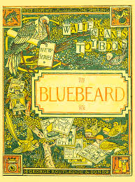
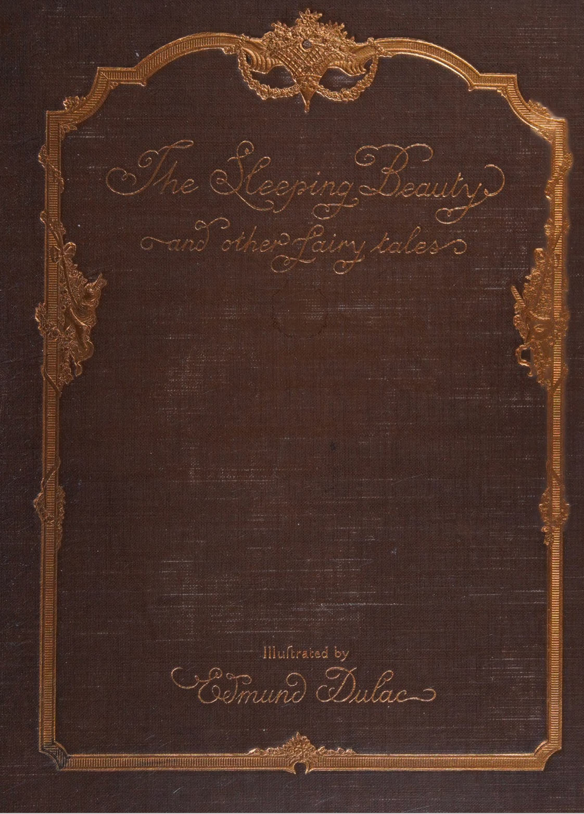
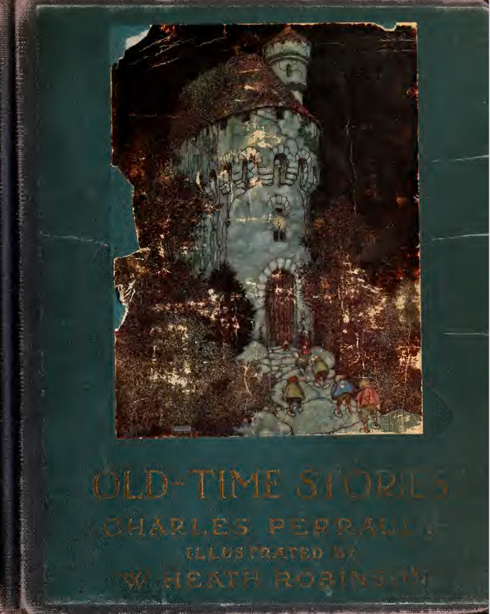
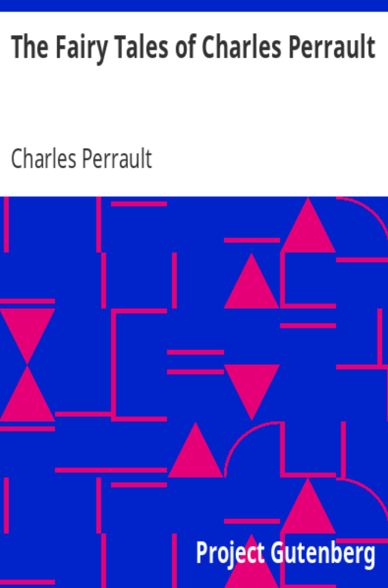
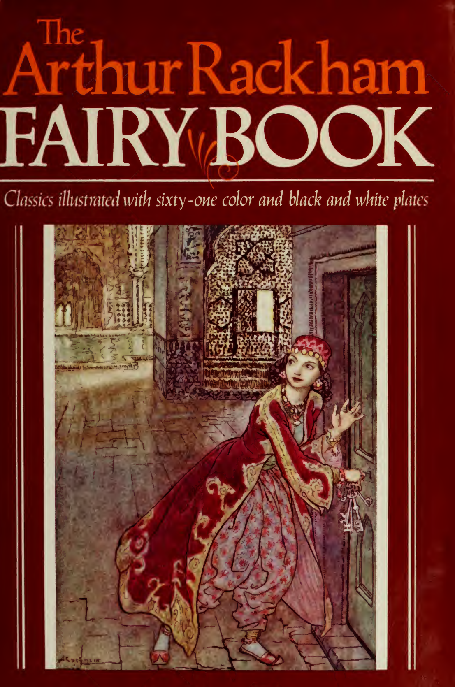
The Chamber
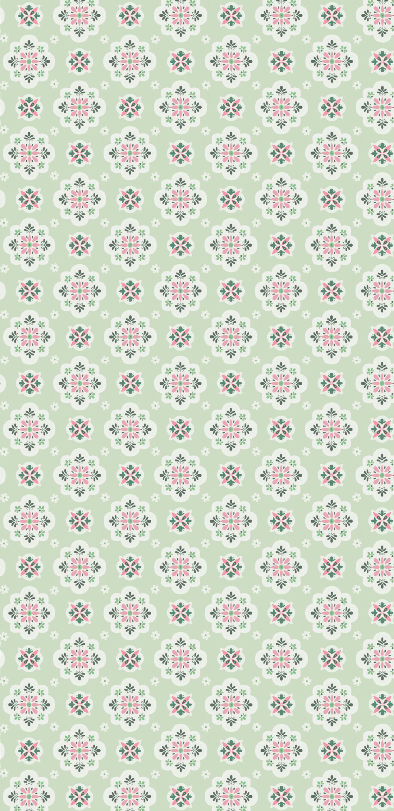
Walter Crane 1875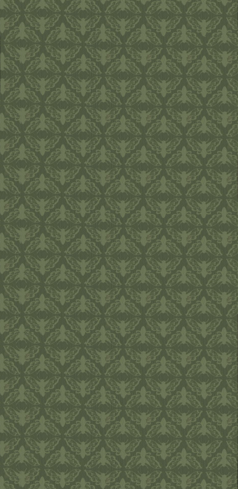
Edmund Dulac 1910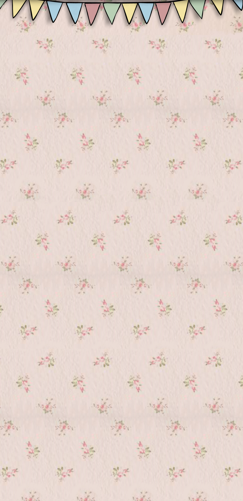
W. Heath Robinson 1921Visual Novel
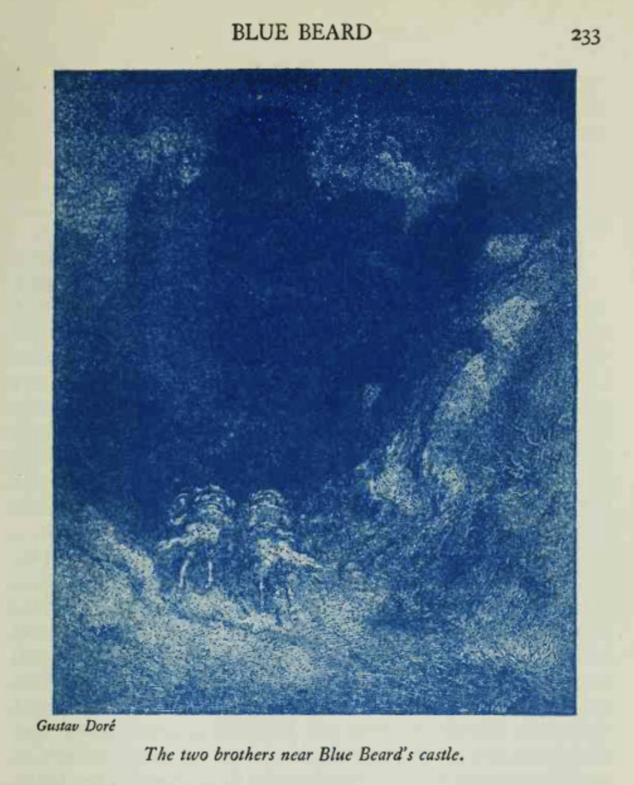
They call me Bluebeard. Over centuries, artists have imagined what I look like — some dressed me in a turban and carried a scimitar, others put me in a powdered wig and silk stockings. Each one was right, after their fashion. This is their story as much as mine.
Discussion
The Empire in the Picture: Orientalism, Violence, and the Decay of a Visual Tradition
Taken as a whole, the exhibition reveals more than British illustrators' use of the Ottoman world as a useful backdrop. The visual language they used to depict Bluebeard shifted in direct proportion to Britain's changing relationship with the Ottoman Empire, and those shifts were quite legible to readers who encountered them.
Across the distance between Crane's European courtier and Rackham's silhouette, between Dulac's seductive pasha and Clarke's grotesque, what unites them all is the consistent function the Ottoman coding performs: relocating the violence. Bluebeard's wife-murder becomes something that happens in another world, at a safe aesthetic distance, in palaces decorated with cushions and turbans rather than in the English drawing rooms where the books were read. The more closely that other world resembled a living political fact, the more the relocation carried genuine ideological weight. The more the empire receded into history, the more the costume became mere convention — an inherited vocabulary with nothing left behind it.
Among all the selected illustrations, Clarke's final image — with Bluebeard composed entirely of his victims, their hair and faces dissolved into his silhouette — refuses that relocation. It insists that the story is not about what happens in Ottoman palaces. It is about possession, incorporation, and the annihilation of women within the structure of marriage itself. The wives have not been locked in a room. They have been absorbed into their husband's substance. That image does not let the reader look away to a comfortable elsewhere. It holds the mirror up and says: this is not a story from over there. This is a story about here.
A century of Bluebeard illustration is, in the end, a century of negotiation — between domesticating a story's violence and confronting it, between placing horror safely abroad and acknowledging that it lives at home. The Ottoman turban was the visual instrument of that negotiation. When the empire behind it collapsed, illustrators were left holding a costume with no body inside it, and had to decide what to do next. Most hung it up. Clarke, at least, asked what it had been hiding.
About
Special Thanks To
A human from Duke helped us visit Dis/orient: Contemporary Art of the Asian Diaspora in person and brought back something truly inspiring.
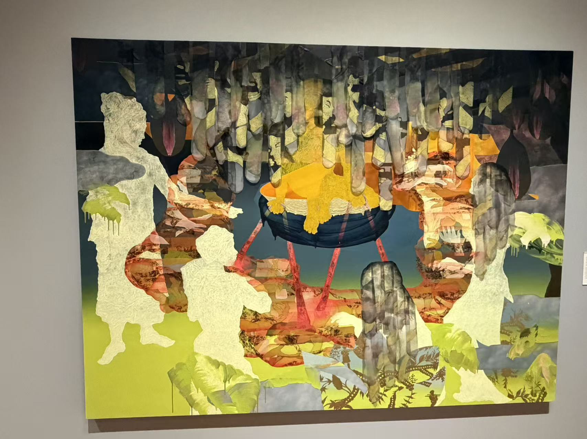
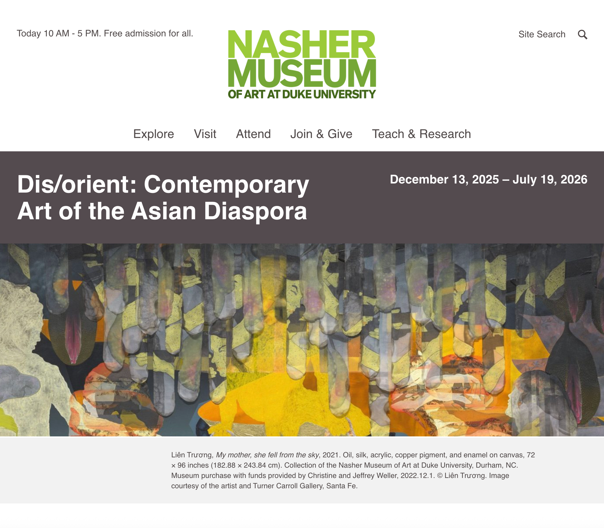
Dis/orient: Contemporary Art of the Asian Diaspora
December 13, 2025 – July 19, 2026